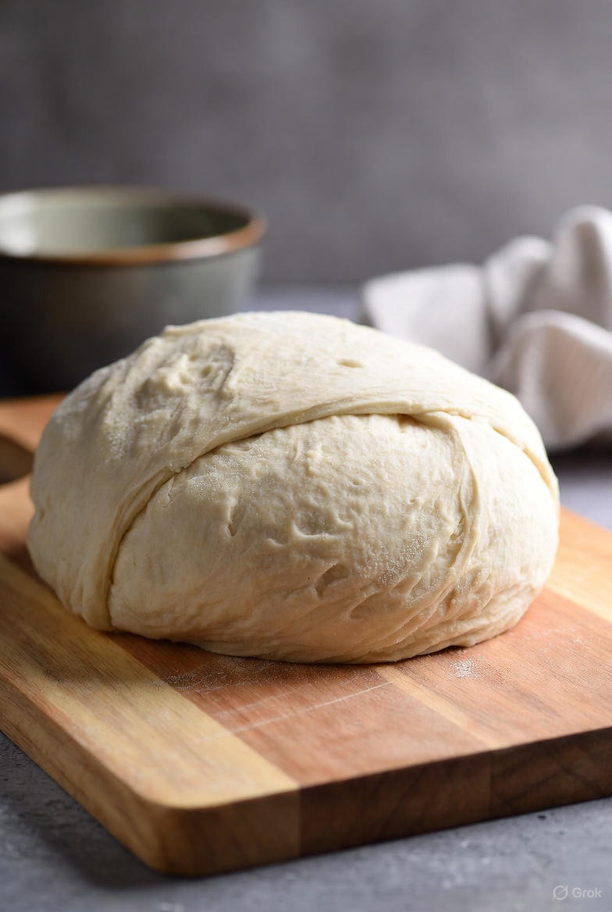

Pizza Dough

Ingredients
- 150g All Purpose Flour
- 20g Vital Wheat Gluten
- 120g Water
- 4g Salt
- 3g Sugar
- 1g Active Dry Yeast
Making the Dough
- Add all the dry ingredients to a stand mixer bowl
- Pour out your water into a seperate container
- Add 75% of the water and knead for 5 minutes
- Slowly add the rest of your water and knead for another 10 minutes
- Let proof on the counter for 1-2 hours
- Cover the dough and allow it to ferment in the refrigerator for 1-3 days
Odin Recipes